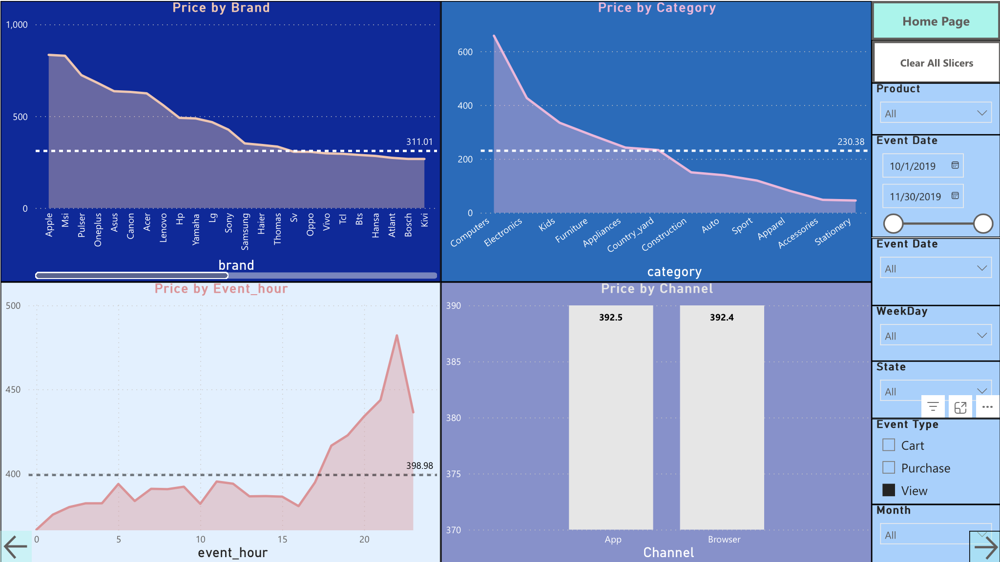
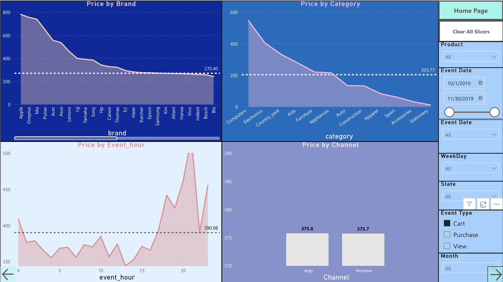
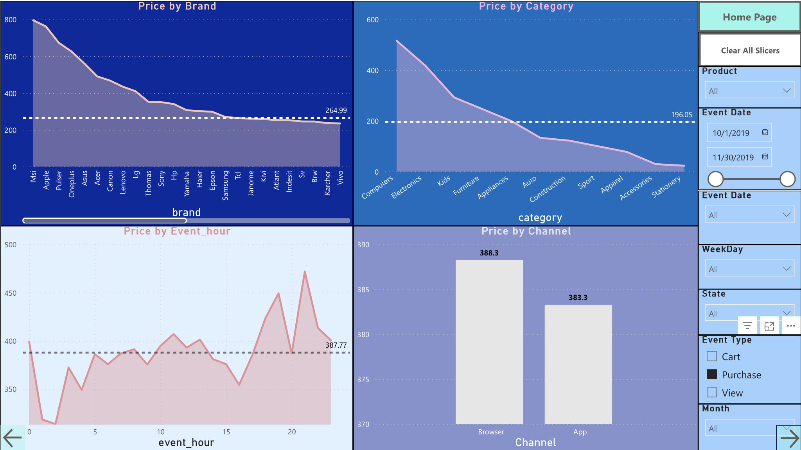
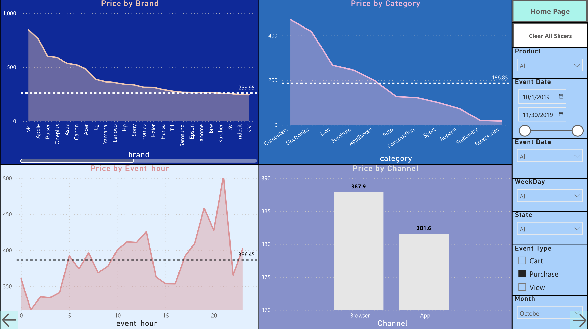
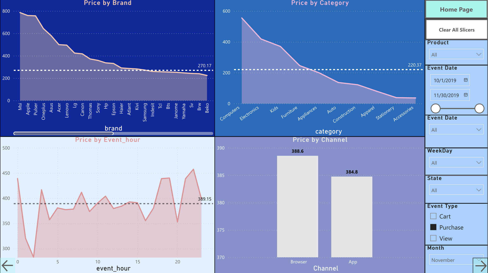

Price Variations Dashboard
Introduction:
TThe Price Variations Dashboard is designed to uncover critical insights into the pricing dynamics of the e-commerce platform. By examining price fluctuations across various dimensions, this dashboard equips us with valuable data for making informed pricing decisions and maintaining competitiveness in the market.

Note: These are slicers for customized analysis based on requirement:
1) Product: Can select Category, Subcategory, Brand
2) Event Date
3) Data Range (Event Date)
4) Weekday
5) State
6) Event Type: View,Cart, Purchase.
7) Month
Do note that cross filters provide a more detailed analysis. e.g selecting a specific Channel or Hour.
Price Analysis:
1) View: 
2) Cart: 
3) Purchase: 
Clearly, the average price across all criterias is lower when products are added to the cart, but we see a significant increase at the Purcahsing Stage which could be the potential reason of only about 9% of customers buying the products from their cart. Understanding how prices vary during different stages of the customer journey allows us to strategize pricing to nudge customers from views to purchases, thereby boosting conversion rates.
1) Oct:

1) Nov:
